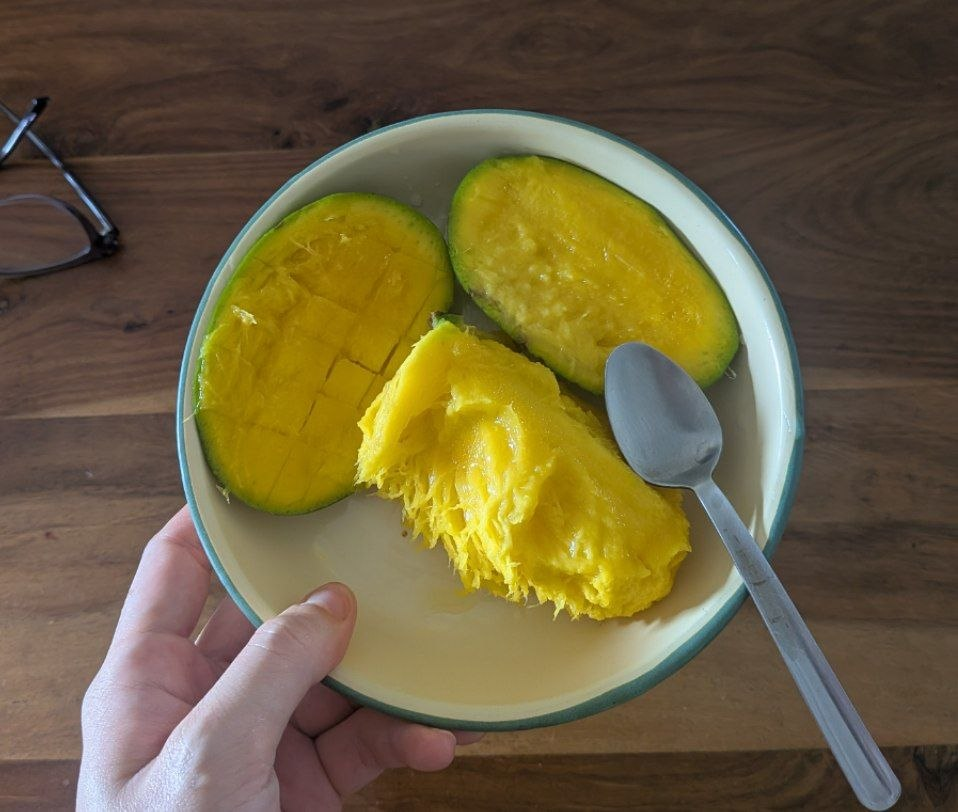
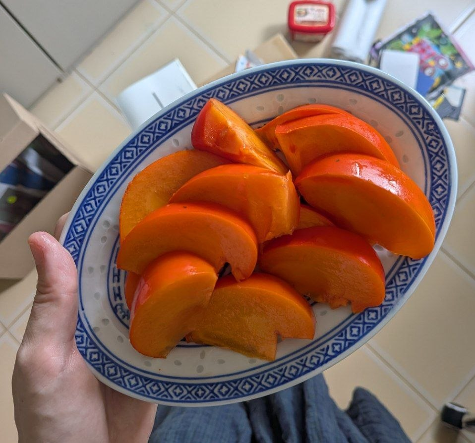

last updated 07/06/2026
state: calm, mildly melancholic, leonine

mango from pulau ubin

vibrant 4.90$ persimmon which i got at a .40$ discount bcos it had a lil bruise
Currently given in to a slothy weekend after finishing a bunch of grant and fundraising work for two performance projects. I think I'm getting used to my system's cycles of focused, relentless work -> recovery & withdrawal through adamant sluggishness -> and so on.
I've also been caught up with an unexpected wave of reorganizing memorabilia from childhood up till today in archival boxes. It's been a deeply Cancerian experience, which I'm not used to but am grateful for.
I finally finished A Swim in a Pond in the Rain by George Saunders -- a marvellous book about writing and reading Russian short stories. I'm now enjoying Narcissus and Goldmund by Herman Hesse, which feels like piece of spiritual scripture, and watching a lot of Game Changer after starting a temporary Dropout.tv subscription.
A few little project ships about to set sail. Some new sampans being built. I'm committed to the long game.